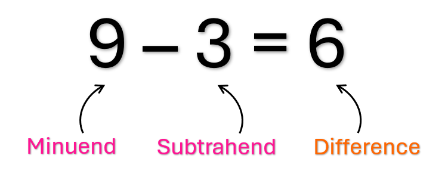

Subtraction is when we have a number and we are taking another number away from it.
We can think of it as starting with a number and count down from it.
When we read or say a subtraction problem we say, "A number minus another number equals a number".
The number that is being subtracted from is called the minuend.
The number that is doing the subtracting is called the subtrahend.
The answer to a subtraction problem is called a difference.
Note: The order of the numbers matter when subtracting. For Example, 9 - 3 is NOT the same as 3 - 9
Like addition, we can write a subtraction problem from top to bottom instead of from left to right, making columns.
To subtract numbers using columns, we do the same thing as addition except we write a minus sign and the answer is the difference.
This is also a common way to subtract numbers with two or more digits.
To subtract two-or-more-digit numbers, we will use columns just like with addition. To do this, write one number below the other, with the place values lining up.
Then subtract the numbers one column at a time.
Don't worry, just like with addition we write the numbers the same way as when both numbers have the same number of digits.
Then subtract the numbers one column at a time
For the columns that don't have any numbers to subtract, we simply bring it down. We can also think of it as the number minus an invisible 0.
Sometimes when we subtract numbers in a column, the top number is smaller. When that happens we do what is called borrowing.
This can happen on any column or on more than one column in a subtraction problem.
How to Borrow
This is what borrowing in multiple columns looks like.
What Happens if We are Borrowing From a Zero?
There will be times when the number to borrow from in the next column is a 0, but how are we supposed to borrow from a number that has nothing to borrow from?
Don't you worry, there is an easy way for us to borrow from 0.
If there are many zeros in a row